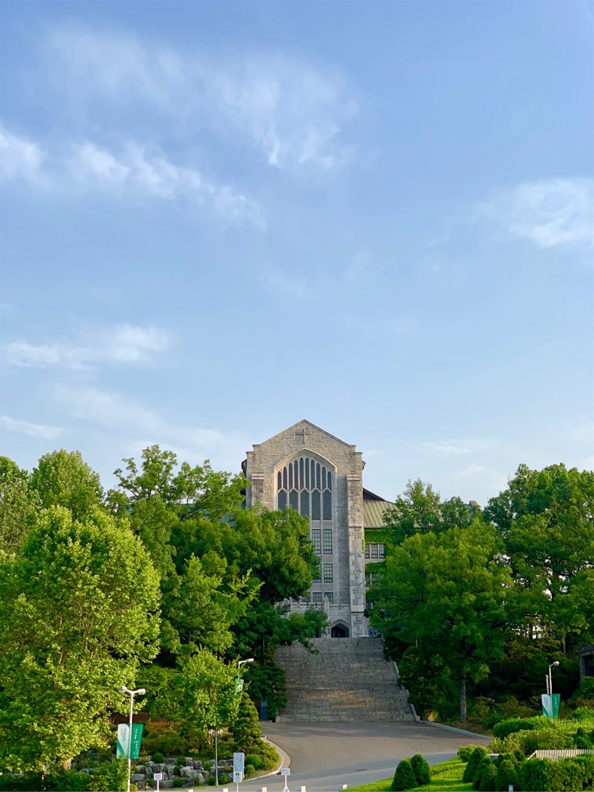

정시 반영비율을 볼 때 대부분 국어와 수학만 봅니다. 이화여자대학교는 그 습관이 손해가 되는 곳입니다. 영어가 20%로 잡혀 있습니다. 주요 대학 중에서 영어를 크게 보는 편이고, 그만큼 "영어는 등급만 맞춰 두면 된다"는 계산이 통하지 않습니다. 이 글은 표를 그래서 어느 과목을 먼저로 바꿔 읽는 글입니다. 고3 영어과외에 시간을 얼마나 줄지 정하는 기준이 됩니다.
| 계열 | 국어 | 수학 | 영어 | 탐구 |
|---|---|---|---|---|
| 인문계열 | 30% | 30% | 20% | 20% |
| 자연계열 | 25% | 30% | 20% | 25% |
2026학년도 기준으로 확인된 비율이고, 2027학년도도 전형방법과 수능 반영비율이 같다고 정리된 자료가 나와 있습니다. 탐구는 두 과목을 반영하며 백분위를 대학 자체 변환표준점수로 바꿔 씁니다. 간호학부·국제학부처럼 비율이 다른 모집단위가 따로 있으니 지원할 학과의 요강을 꼭 확인하셔야 합니다.
영어 등급별 환산점수는 1등급 100점, 2등급 98점, 3등급 94점, 4등급 88점이고 그 아래로 84·80·76·72·68점입니다. 등급 하나에 2~6점씩 빠지는데, 이 점수에 20%가 걸립니다.
여기서 읽어야 할 것은 두 가지입니다. 첫째, 1등급과 2등급의 차이는 2점으로 크지 않습니다. 이미 2등급 근처에 있는 학생이 영어만 붙잡고 몇 달을 쓰는 것은 효율이 낮습니다. 둘째, 3등급 아래로 내려가면 계단이 급해집니다. 2등급에서 4등급으로 두 칸 떨어지면 10점이 사라지고, 20% 비중에서 이 10점은 국어·수학 한 문항 이상의 무게입니다.
그래서 기준은 단순합니다. 영어는 3등급 이하일 때만 최우선 과목입니다. 2등급 이상이면 지키는 루틴으로 돌리고 남은 시간을 국어·수학·탐구로 옮기는 편이 총점에 유리합니다.
자연계열은 탐구가 25%로 국어(25%)와 같고, 여기에 과학탐구를 응시하면 과목당 변환표준점수의 6%를 가산합니다. 비율과 가산이 같은 방향으로 붙으니 탐구 두 과목이 총점을 흔드는 폭이 상당히 큽니다.
실전에서 쓸 기준입니다. 자연계열 지원자는 탐구 두 과목을 마지막까지 같은 속도로 끌고 갑니다. 한 과목만 잘하고 한 과목을 버리는 조합은 25%짜리 칸을 반쯤 비우고 가산점도 절반만 받는 선택입니다.
인문계열은 국어와 수학이 둘 다 30%입니다. 어느 쪽이 유리하다고 말할 수 없는 구조라, 둘 중 약한 과목이 곧 약점이 됩니다. 국어가 강하다고 수학을 미루면 30%짜리 칸에서 그대로 손해가 나고, 반대도 같습니다.
한국사도 등급별 점수로 반영됩니다. 다만 상위 등급 구간에서는 점수 차가 크지 않게 설계되는 편이라, 목표 등급을 정해 짧게 관리하는 쪽이 맞습니다. 정확한 등급별 점수는 요강으로 확인하세요.
학생 수준에 맞는 선생님을 24시간 안에 추천해 드려요. 상담은 무료입니다.